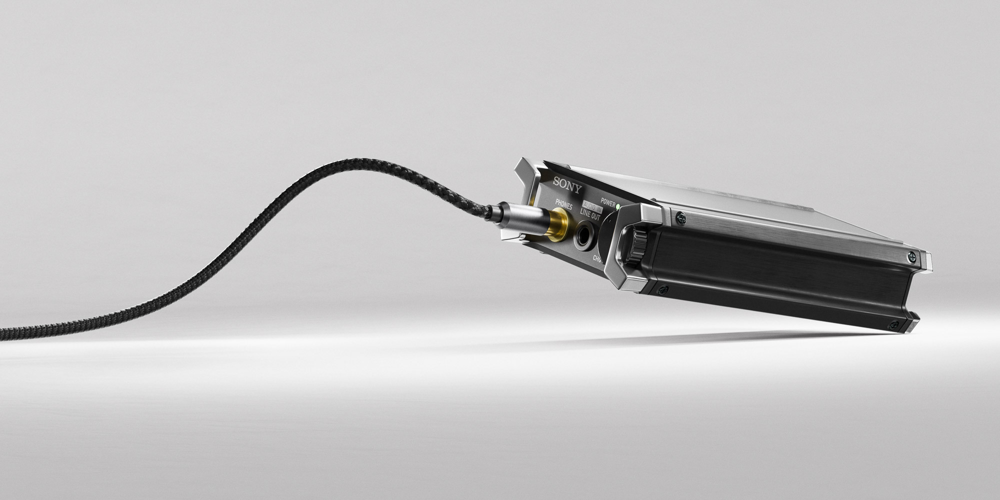
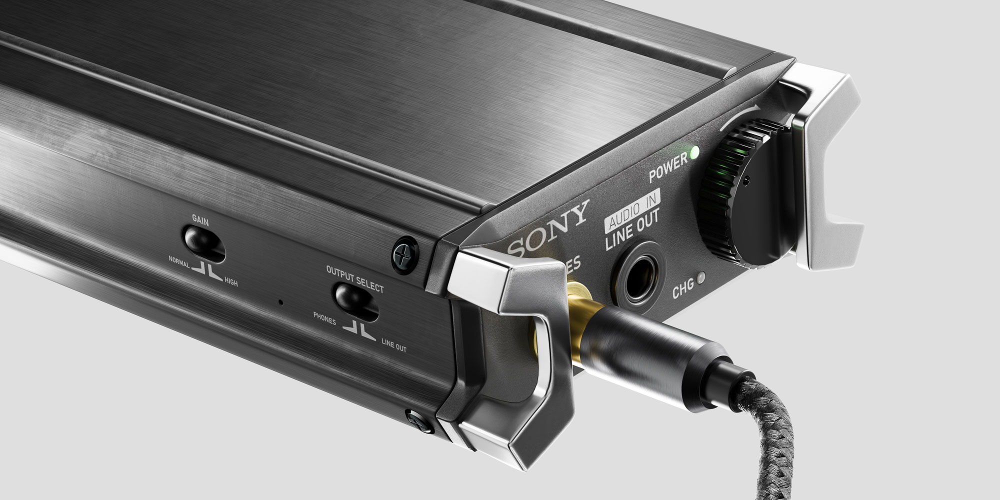
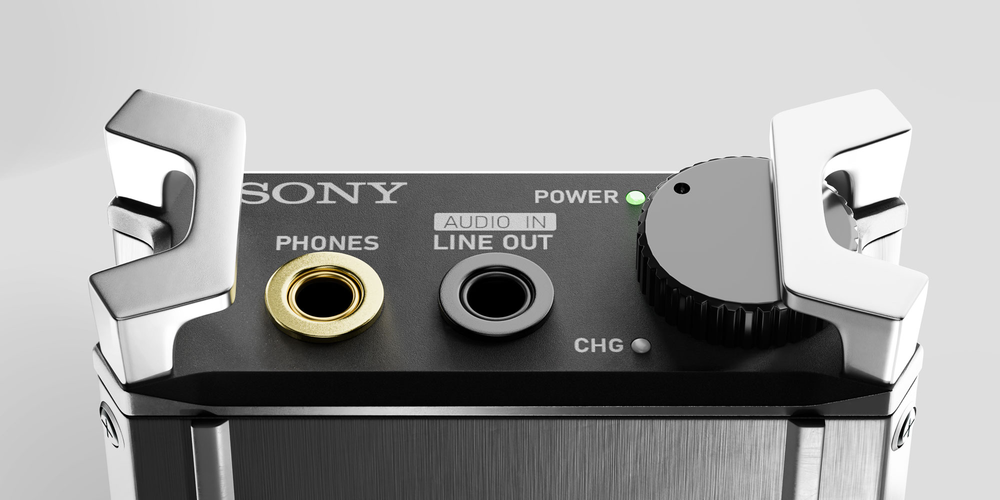

SONY PHA2 DAC
OVERVIEW
Blender / Substance Painter - 2022 (Revised 2025)
Sony is well known in the audio engineering community for their high quality audio equipment. The PHA2 DAC by sony is a slim pocketable amp that you can fit in your pocket. It delivers 17 hours of battery life and hi-res audio for enthusiasts on the go. This model was created in the summer of 2022 using Blender using subdivision modeling. The model was textured in adobe substance painter and rendered in cycles. The project was remade in 2025 to update textures and lighting, keeping in mind simple color schemes and clean composition that often defines Sony's look.


